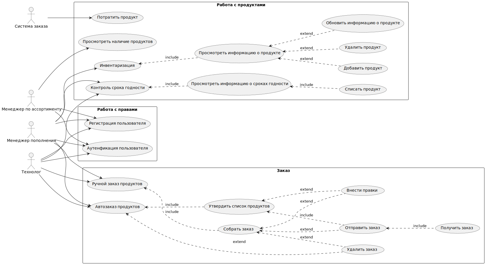

Требования к системе
Требования к системе в целом
Производительность
NFPER1 Система должна обслуживать не менее 30 пользователей в период пиковой активности с 08:00 до 20:00 по местному времени
NFPER2 Приложение должно обеспечивать время отклика не более 1 секунд для выполнения основных операций (например, добавление, редактирование и удаление продуктов) в 80% случаев .
NFPER3 Приложение должно эффективно обрабатывать инвентаризацию на уровне до 10,000 единиц товаров без значительного ухудшения производительности.
Безопасность
NFSEC1
Система должна предусматривать аутентификацию пользователей в системе по логину и паролю.
NFSEC2 Пользователи должны обязательно аутентифицироваться для просмотра и выполнения действий
NFSEC3 Приложение должно поддерживать управление доступом на основе ролей.(администратор/пользователь)
Масштабируемость
NFEXT1 Система должна поддерживать возможность добавления новых серверов для обработки увеличивающегося количества запросов и данных.
NFEXT2 Приложение должно позволять управлять системой хранение продуктов, инвентаризацией и автозаказом без потери текущей производительности при приросте 2 ресторана в год.
Надежность
NFROB1 Вероятность возникновения критической ошибки должна составлять не более 0,5 % обращений.
NFROB2 Система должна демонстрировать уровень надёжности, при котором время восстановления после сбоя в работе отдельной функции не превышает 30 с секунд в 90% случаев.
NFROB3 Приложение должно иметь механизмы для автоматического восстановления данных после сбоев, включая резервное копирование и восстановление данных.
Совместимость
NFCOM1 Мобильное приложение должно быть совместимо с ОС Android 5.0 или выше и iOS 10 или выше.
NFCOM2 Веб-приложение должно быть совместимо с браузерами, работающими на движках: Blink; Gecko; WebKit
NFCOM3 Приложение должно поддерживать интеграцию с 1С, сервисом заказа ресторана, системами поставщиков.
Доступность
NFAVL1 Допустимое время простоя в сутки не более 30 минут.
NFAVL2 Уровень доступности: Система должна обеспечивать уровень доступности 98%, за исключением времени планового обслуживания.
NFAVL3 Допустимое время простоя в месяц, часов, не более 5 часов
Особенности хранения данных
NFDT1 Логи о действиях сотрудника должна храниться 2 года
NFDT2 Бекапы БД должны производиться каждые 60 мин.
NFDT3 Бекапы БД должны храниться 7 дней с момента создания.
Концептуальная целостность
NFARC1 Система должна соответствовать архитектурному стилю REST.
Поддерживаемость
NFSUP1 Необходимо логировать действия пользователей в системе. Просмотр данных логов должен осуществляться через графический интерфейс.
NFSUP2 Необходимо предоставить полную документацию как для пользователей, так и для разработчиков, включая руководства, API-документацию
Удобство использования
NFRS1 Приложение должно иметь адаптивный дизайн для различных устройств: мобильные телефон, планшет.
Требования к функциям (задачам), выполняемым системой
UseCase диаграмма
Основные функции системы представлены в виде UseCase диаграммы.

Описание UseCase, реализуемых в рамках MVP
| Название | Инвентаризация |
|---|---|
| Краткое описание | Проведение инвентаризации продуктов ресторана |
| Субъекты | Менеджер пополнения(пользователь ) |
| Предусловие | Менеджер пополнения авторизован в системе и у него есть аппарат для сканирования штрихкода |
| Постусловие | Все Продукты проверены, информация в системе верная |
| Основной сценарий | 1. Пользователь сканирует штрихкод продукта. 2. Система показывает информацию по продукту 3. Пользователь сверяет информацию 4. Если информация верная, пользователь переходит к проверке следующего продукта Конец сценария,когда все продукты проверены |
| Альтернативный сценарий | Продукт не найден 2А. Система выдает ошибку, что продукт не найден 1. Пользователь добавляет информация о продукте в систему
Некорректная информация в системе 4А. Если информация некорректная: 1. Пользователь вносит правки 2. Пользователь сохраняет новую информацию
|
Прерывание процесса: |
Система на любом шаге позволяет завершить процесс |
| Название | Добавить продукт |
|---|---|
| Краткое описание | Добавление продукта в базу |
| Субъекты | Менеджер пополнения, технолог |
| Предусловие | Пользователь авторизован в системе находится в главном интерфейсе |
| Постусловие | Продукт добавлен в базу |
| Основной сценарий | 1. Пользователь нажимает кнопку добавить продукт 2. Система показывает форму для ввода информации 3. Пользователь заполняет необходимую информацию. 4. Пользователь нажимает кнопку для сохранения информации 5. Система сохраняет информацию в базе 6. Система показывает уведомление,что продукт успешно добавлен Конец сценария |
| Альтернативный сценарий | Пользователь передумал добавлять новый продукт
1. Система возвращается в главный интерфейс Конец сценария 4А. Пользователь нажимает кнопку отмена 1. Система показывает форму для отмены добавления товара 2. Пользователь отменяет добавление 3. Система возвращается в главный интерфейс |
Прерывание процесса: |
Система на любом шаге позволяет завершить процесс |
| Название | Обновить информацию о продукте |
|---|---|
| Краткое описание | Обновление информации о продукте уже занесенном в систему |
| Субъекты | Менеджер пополнения, технолог |
| Предусловие | Пользователь авторизован в системе находится в главном интерфейсе |
| Постусловие | Информация о продукте обновлена |
| Основной сценарий | 1. Пользователь открывает информацию о необходимом продукте 2. Пользователь вносит изменения в информацию о продукте 3. Пользователь нажимает кнопку для сохранения информации 4. Система сохраняет новую информацию о продукте 5. Система показывает уведомление,что продукт успешно обновлен Конец сценария |
| Альтернативный сценарий | Пользователь не нажимает кнопку для сохранения информации 3А Пользователь переходит на другую страницу или обновляет текущую 1. Система выводит предупреждение о том, что введенная информация не сохранится. Предлагает сохранить измененную информацию 2. Пользователь нажимает кнопку сохранения. 3. Конец сценария |
Прерывание процесса: |
Система на любом шаге позволяет завершить процесс без сохранения изменений |
| Название | Автозаказ продуктов |
|---|---|
| Краткое описание | Автоматический заказ продукции при критическом количестве продукта в системе |
| Субъекты | Менеджер пополнения(пользователь) Система Поставщик |
| Предусловие | Осталось минимально допустимое количество продукта,пользователь авторизован |
| Основной сценарий | 1. Система присылает пользователю уведомлении о формировании заказа поставищку 2. Пользователь проверяет и утверждает заказ 3. Система отправляет поставщику заказ 4. Поставщик утверждает заказ 5. Система ожидает получения заказа 6. Пользователь получает заказ 7. Пользователь отмечает в системе,что заказ получен 8. Пользователь добавляет сведения в систему Конец сценария |
| Альтернативный сценарий | Пользователю требуется внести изменения в заказ 2А Пользователь не утверждает заказ 1. Пользователь вносит изменения в заказ 2. Возвращение к п. 2 основного сценария Конец сценария |
Прерывание процесса: |
Система на любом шаге позволяет завершить процесс без сохранения изменений |
| Название | Ручной заказ продуктов |
|---|---|
| Краткое описание | Менеджеру пополнения необходимо заказать продукты вручную |
| Субъекты | Менеджер пополнения(пользователь) Система Поставщик |
| Предусловие | Пользователь авторизован в системе |
| Основной сценарий | 1. Пользователь формирует заказ поставщику 2. Пользователь проверяет и утверждает заказ 3. Система отправляет поставщику заказ 4. Поставщик утверждает заказ 5. Система ожидает получения заказа 6. Пользователь получает заказ 7. Пользователь отмечает в системе,что заказ получен 8. Пользователь добавляет сведения в систему 9. Конец сценария |
| Альтернативный сценарий | |
Прерывание процесса: |
Система на любом шаге позволяет завершить процесс без сохранения изменений |
| Название | Контроль срока годности |
|---|---|
| Краткое описание | Контроль сроков годности продуктов для предотвращения их списания |
| Субъекты | Система Менеджер пополнение(пользователь) |
| Предусловие | Осталось 5 дней до окончания срока годности продукта |
| Основной сценарий | 1. Пользователю приходит уведомление о скором окончании срока годности продукта 2. Система ставит продукт первым в очередь на выдачу 3. Пользователь контролирует срок годность продукта 4. При поступлении заказа и срок продукта еще не вышел, он выдается для приготовление заказа Конец сценария |
| Альтернативный сценарий | Срок годности продукта вышел 4А Срок годности продукта вышел 1. Пользователю приходит уведомление, что у продукта закончился срок годности 2. Пользователь списывает продукт 3. Система добавляет данные в отчет |
Прерывание процесса: |
| Название | Списание продукта |
|---|---|
| Краткое описание | Списание продуктов в процессе инвентаризации |
| Субъекты | Менеджер пополнение(пользователь) Система |
| Предусловие | Пользователь авторизован в системе. Пользователь просматривает информацию о продукте, в частности срок годности.У продукта истек срок годности или он испорчен |
| Основной сценарий | 1. Пользователь выбирает списать продукт 2. Пользователь указывает причину списания 3. Система снимает продукт с баланса. 4. Система добавляет данные в отчет |
| Альтернативный сценарий | |
Прерывание процесса: |
Система на любом шаге позволяет завершить процесс без сохранения изменений |
| Название | Просмотреть информацию о продукте |
|---|---|
| Краткое описание | Просмотреть полную информацию о продукте |
| Субъекты | Менеджер пополнения(пользователь) Система |
| Предусловие | Пользователь прошел аутентификацию в приложении |
| Основной сценарий | 1. Пользователь вводит в поле фильтра информацию для поиска продукта 2. Система выдает результаты поиска 3. Пользователь выбирает нужный продукт 4. Система показывает окно с полной информацией о продукте 5. Пользователь закрывает окно,ознакомившись с информацией Конец сценария |
| Альтернативный сценарий | Пользователь в чтение 5 минут не закрывает окно 5А Система возвращается в исходное окно |
Прерывание процесса: |
Система на любом шаге позволяет завершить процесс без сохранения изменений |
| Название | Аутентификация пользователя |
|---|---|
| Краткое описание | Вход зарегистрированного пользователя в систему |
| Субъекты | 1. Клиент 2. Система |
| Предусловие | Клиент уже зарегистрирован в системе администратором . Клиент открыл страницу аутентификации. |
| Постусловие | Клиент авторизован в системе |
| Основной сценарий | 1. Клиент вводит логин и пароль. 2. Клиент пытается авторизоваться 3. Система проверяет, что логин и пароль введены корректно 4. Конец сценария |
| Альтернативный сценарий | Логин или пароль некорректны 3А.Не найден пользователь с такими данными. 1. Система выдает сообщения,что вход не возможен и предлагает восстановить пароль. 2. Пользователь выбирает восстановить пароль: 1. Система выводит диалоговое окно для ввода электронной почты указанного при регистрации. 2. Клиент вводит данные 3. Система отправляет новый пароль на введенный имейл. 4. Переход к п.1 основного сценария. Конец сценария |
Прерывание процесса: |
Система на любом шаге позволяет завершить процесс без сохранения изменений |
| Название | Выдача продукта |
|---|---|
| Краткое описание | Выдача продукта для приготовления заказа роботу |
| Субъекты | 1. Приложение заказа 2. Система 3. Система роботов 4. Технолог |
| Предусловие | Клиент сделал заказ в ресторане, заказ оплачен,продукты есть в наличии роботы освободились для приготовления. |
| Основной сценарий | 1. Система роботов отправляет запрос в приложении заказа,что робот освободился 2. Приложение заказа в систему отправляет запрос для выдачи продуктов 3. Система ищет забронированные продукты для данного заказа 4. Система снимает с баланса выбранные продукты 5. Система добавляет данные в отчет 6. Робот начинает готовить заказ Конец сценария |
| Альтернативный сценарий | Произошла ошибка,нет забронированных продуктов 3А Система не нашла забронированного продукта 1. Система выдает ошибку 2. Система отправляет уведомление технологу о произошедшей ошибке 3. Технолог ищет подходящие продукты и добавляет их для приготовления заказа в систему 4. Система переходит к п. 4 основного сценария. |
Прерывание процесса: |
Описание UseCase, реализуемых в рамках первого релиза
| Название | Удалить продукт |
|---|---|
| Краткое описание | Удаление продукта из системы |
| Субъекты | Менеджер пополнения, технолог |
| Предусловие | Пользователь авторизован и просматривает информацию о продукте |
| Постусловие | Продукт удален из базы |
| Основной сценарий | 1. Пользователь нажимает кнопку удалить продукт 2. Система показывает форму подтверждения удаления 3. Пользователь подтверждает удаление продукта 4. Система удаляет продукт, заносит в отчет Конец сценария |
| Альтернативный сценарий | Пользователь передумал удалять продукт 3А. Пользователь отменяет удаление продукта Конец сценария |
Прерывание процесса: |
Система на любом шаге позволяет завершить процесс |
| Название | Регистрация пользователя |
|---|---|
| Краткое описание | Регистрация пользователя для возможно управления и чтения информации о продуктах |
| Субъекты | 1. Пользователь 2. Система |
| Предусловие | Пользователь зашел на страницу регистрации |
| Постусловие | Пользователь зарегистрирован в системе |
| Основной сценарий | 1. Пользователь заполняет на странице данные для регистрации 2. Система проверяет наличие в системе пользователей с такими же логином,почтой или телефоном. 3. Если пользователь с таким и данными не существует Система отправляет код подтверждения на электронную почту 4. Система выводит диалоговое окно подтверждения номера телефона. 5. Пользователь вводит код подтверждения в диалоговом окне 6. Система сохраняет данные регистрации.
|
| Альтернативный сценарий | 3А: Пользователь с введенным данными уже существует. 1. Система выводит сообщение, что пользователь с такими данными уже зарегистрирован. 2. Пользователь закрывает окно предупреждения 3. Пользователь вводит новые данные для регистрации 4. Переход к п.2 основного сценария. Конец сценария. |
Прерывание процесса: |
Система на любом шаге позволяет завершить процесс без сохранения изменений |